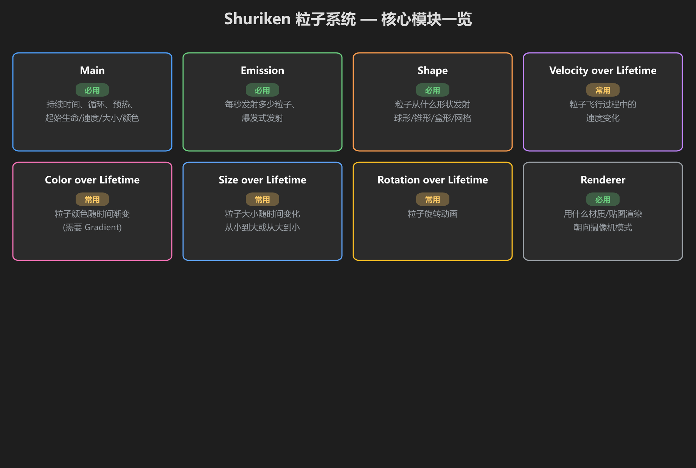
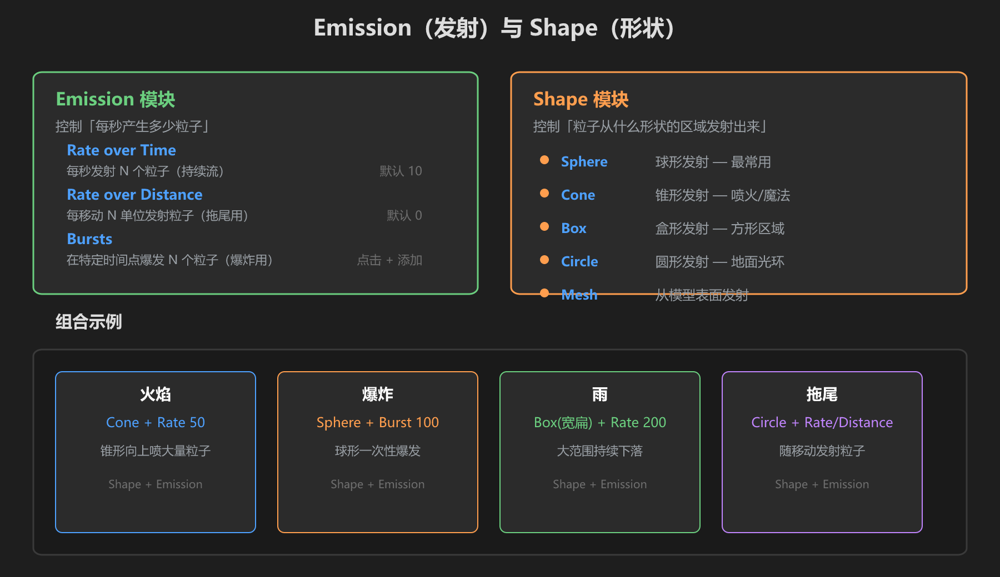
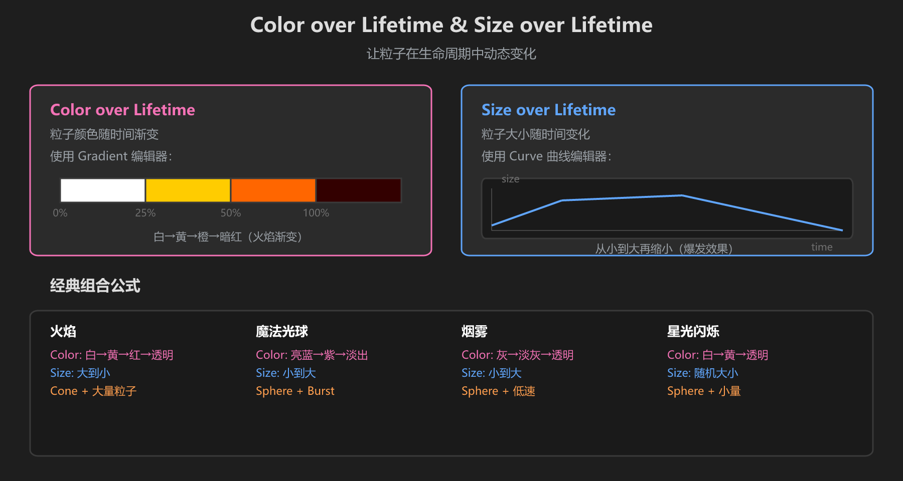

第 2 篇：粒子系统核心模块
上一篇你创建了第一个粒子系统。现在来看看 Inspector 里那些模块到底是什么意思——这是做出好特效的关键。
1. 模块全景图
Unity 的粒子系统（Shuriken）采用 模块化设计。每个模块独立控制一个方面，勾选即启用。

图：Shuriken 粒子系统的核心模块一览 — 标注了「必用」和「常用」
| 模块 | 作用 | 重要程度 |
|---|---|---|
| Main | 持续时间、循环、起始生命/速度/大小/颜色 | 必用 |
| Emission | 每秒发射多少粒子、爆发式发射 | 必用 |
| Shape | 粒子从什么形状发射（球/锥/盒） | 必用 |
| Color over Lifetime | 粒子颜色随时间渐变 | 常用 |
| Size over Lifetime | 粒子大小随时间变化 | 常用 |
| Velocity over Lifetime | 粒子飞行中的速度变化 | 常用 |
| Renderer | 用什么材质/贴图渲染、朝向模式 | 必用 |
2. Emission — 控制粒子数量
Emission 模块决定「每秒产生多少粒子」。这是控制特效密度的核心参数。

图：Emission 模块（左）与 Shape 模块（右），以及四种经典组合
| 参数 | 作用 | 典型值 |
|---|---|---|
| Rate over Time | 每秒发射 N 个粒子 | 火焰 30-50 / 烟雾 10-20 / 魔法 5-15 |
| Rate over Distance | 每移动 N 单位发射粒子（拖尾用） | 拖尾效果设 5-10 |
| Bursts | 在特定时间点一次性爆发 N 个粒子 | 爆炸在 0 秒爆发 50-100 个 |
实用技巧：Rate 太高会严重影响性能。VRChat 中建议单个系统的 Rate 不超过 100，粒子总数不超过 2000。
3. Shape — 粒子从哪里发射
Shape 模块决定粒子从什么形状的区域发射出来。不同的 Shape 适合不同的特效：
| Shape 类型 | 适合什么特效 | 关键参数 |
|---|---|---|
| Sphere（球形） | 爆炸、魔法爆发、光球 | Radius（半径） |
| Cone（锥形） | 火焰喷射、魔法光束、喷泉 | Angle（角度）、Radius |
| Box（盒形） | 雨雪、方形区域特效 | Box Size 各方向 |
| Circle（圆形） | 地面光环、传送阵 | Radius、Arc（弧度） |
| Mesh（网格） | 从模型表面发射 | 指定 Mesh |
4. Color over Lifetime — 颜色渐变
这个模块让粒子在生命周期中改变颜色。打开后你会看到一个 Gradient（渐变）编辑器。

图：Color over Lifetime（渐变条）和 Size over Lifetime（曲线），以及经典组合公式
渐变条的操作方式：
- 点击渐变色条下方的标记点来选择颜色
- 双击空白处添加新的颜色标记
- 左侧 = 粒子刚出生时的颜色，右侧 = 粒子消亡时的颜色
- 上方的标记控制透明度（Alpha）
火焰的经典渐变：白色 → 黄色 → 橙色 → 红色 → 透明（从左到右依次设置）
5. Size over Lifetime — 大小变化
使用 Curve（曲线） 来控制粒子大小随时间的变化。横轴是时间（左=出生，右=消亡），纵轴是大小倍数。
| 曲线形状 | 效果 |
|---|---|
| 从左高到右低（↘） | 粒子从大变到小 — 适合火焰、爆炸碎片 |
| 从左低到右高（↗） | 粒子从小变到大 — 适合烟雾、扩散魔法 |
| 先高后低再高（∧∨） | 闪烁效果 — 适合星星、光点 |
点击曲线：在曲线编辑器中，双击曲线可以添加控制点。拖动控制点可以调整曲线形状。右键控制点可以删除。
6. 练手：做一个简单的火焰
用上面学的知识，来做一个最基础的火苗：
- 创建 Particle System，命名为「Fire」
- Main：Start Lifetime = 1.5，Start Speed = 2，Start Size = 2
- Emission：Rate over Time = 30
- Shape：选 Cone，Angle = 10，Radius = 0.1
- Color over Lifetime：勾选，设置渐变：白 → 黄 → 橙 → 红 → 透明
- Size over Lifetime：勾选，曲线设为从 1 降到 0（粒子越飞越小）
- 点 Play，你应该看到一个向上喷射的火焰雏形
学前检查清单
- 理解了 Emission 的 Rate over Time 和 Bursts 的区别
- 知道 Cone / Sphere / Box 三种 Shape 分别适合什么场景
- 会使用 Gradient 编辑器设置颜色渐变
- 会使用 Curve 编辑器设置大小变化
- 成功做出了一个简单的火焰效果